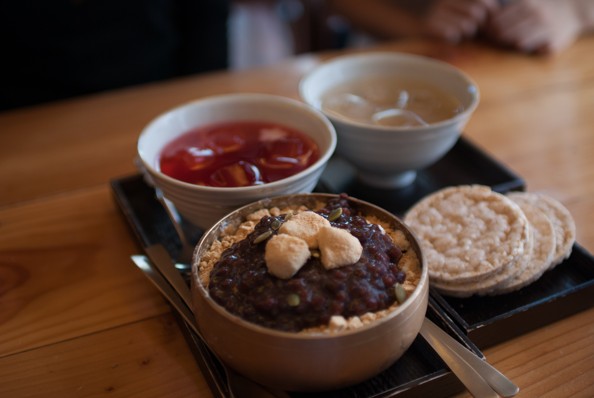

I had a trip to South Korea in September, for a fusion engineering conference on Jeju Island (my work was... OK).
After the conference I took a side trip to Seoul to visit some old Korean friends I hadn't seen since 2008. Back in '08, we were all studying Chinese at Nanjing Normal University in neighboring classrooms and we quickly became friends. As a small group we would go out to eat together practically every day -- often to Korean-style restaurants around Nanjing. That was my first introduction to Korean food and I was immediately in love with it -- at that time it was bibimbop that ruled over all.
Living in LA, Korean food is everywhere and I now eat it regularly, but somehow I just stuck to the mainstays: bibimbap, galbi, and bulgogi. Though I was introduced to, and subsequently obsessed with, soon tofu stews.
What's the point of this introduction? That all I really wanted to do in Korea was eat food. I had a lot of extremely delicious classics and discovered some new favorites. Below is my ode to Korean food, listed in a kind of top 10
No. 10: Flavored soju
The night-before-last of the conference in Jeju, there was a gala dinner during which soju was freely given at everyones table. Me, some colleagues, and quite a few higher-up type folks got absolutely blottoed on the soju. That was fun but not exactly sustainable in terms of enjoyable drinking outings. So I was pleasently surprised when in Seoul and The Koreans got some not-exactly-soju soju. It was flavored with peach, orange, and I think even grapefruit. It was also only a bit stronger than a normal red wine which meant that drinking it to wash down the hot-ass green peppers wouldn't leave you crosseyed and bleary. I am a definite fan.
No. 9: Some pile of desserts

I'm only 1 item deep into my top-10 and I'm already cheating... #9 isn't a single dish, but rather the Korean style of dessert. This made its way on my list of awesome Korean food because of how damned refreshing it was after walking around in the humid afternoon heat of Seoul.
First we had two cold soups, called "five flavor tea soup" and "rice wine soup". The latter tasted like the kind of semi-sweet barley wine served at some Japanese restaurants as dessert. The former was a super tangy, tarty, and slightly sweet soup.
Together with the soups was a bowl of shaved ice mixed/covered with almond and a glutinous rice cake (dduk) cut into half-moon shapes (songpyeun). On top of it all was a thick red bean soup (I think. At least that's what my memory is telling me) similar to some Taiwanese desserts.
All in all, none of these were particularly fancy. But they were extraordinarily soothing and a welcome break from the typical spicy Korean dishes.
No. 8: Gogi guksu
I was told this is a specialty dish on Jeju. It's a soup noodle dish with a pork broth and slices of pork belly. The pork used in the soup is Jeju Island's famous black pork. Even though I've generally cut pork from my diet, I had to try this while on the island. The broth was hearty and only a little creamy (less than a pork ramen, for instance) but very filling. The two places I had it would also refill the noodles as long as there was still soup left in the bowl. Paired with a cheap Korean beer and it was an excellent little dinner.
No. 7: Banchan (or, kimchi, lots and lots of kimchi)

I'm cheating again with #8. This spot is held for the tradition of giving tons of tiny bowls of food before the entree arrives. It seems there's some standardization but lots of variations on the theme when you go from restaurant to restaurant. But in particular, I want to give a shout-out to the main muchacho of the banchan: kimchi.

This is one of the banchan dishes that everyone's familiar with as a side to Korean food. For the two weeks in Korea I had kimchi no fewer than twice a day. I realized that after that trip I was either going to never want to eat kimchi ever again or else be in love with it and want it all the time. I'll leave it open to which way I went.
No. 6: Those friggin green peppers

My first introduction to these ubiquitous green peppers was on Jeju Island when me, Keisuke, and Matthias had a k-bbq dinner. I kind of nervously bit my way through the first half of the pepper before nearly keeling over from the heat. Keisuke tells me that he hears Koreans can just chomp on these things like snacks. But the way I had trouble breathing from even getting a sample of the pepper seed in my mouth, I really thought it wasn't humanly possible to eat an entire pepper. Masochistically, for the rest of our time in Jeju we'd pass the green peppers around to try and eat as much as possible -- never quite finishing a single one but always getting much pain.
... Then I went to dinner with Sunny, Sara, and Angie. We're casually working our way through some beef galbi when I see Sunny DIP THE GREEN PEPPER IN HOT SAUCE AND EAT IT LIKE A CARROT. I could not believe my eyes. She was sitting there eating something that had only a night before knocked me to the ground. I figured the peppers in Seoul must definitely not be as hot as in Jeju. So I took the pepper she was eating and bit just a couple millimeters deep. Results were the same. I died. As I'm coughing and guzzling soju to wash my mouth of that death-heat, she dips it back into a very very hot hot sauce and crunches off another inch of the pepper. Unreal. Un-frickin-real.
No. 5: Kimbop

Angie introduced me to this little treat that I theretofore referred to as the Korean Burrito. She had grabbed it from a little stand in the underground passages between subway stops. She told me lots of people make these for breakfast and take them to work to eat as snacks during the day. I found a little cart selling tuna versions of the kimbop outside my airbnb and would pick up 2 or 3 every morning before heading out to sightsee. They're convenient, filling, simple, and delicious to boot. A perfect snack -- earning its spot in my arbitrary list of top 5 Korean food-things.
No. 4: K-BBQ
I suppose if you put a gun to my head and forced me to choose my favorite meat in Korean BBQ, I'd say it was samgyeopsal. But choosing a favorite K-BBQ is sort of stupid because what makes K-BBQ so damned enjoyable is the entire experience. First, you get your piles of banchan while coals are brought out or the heat is turned onto your grill.

Then, as is usually the case, someone at the table involuntarily becomes the scissor-man and server. This person is in charge of cutting up the big pieces of meat as they cook and turning over meat before they burn. Common decency dictates that, meanwhile, someone else ensures the scissor-man always has a full beer glass.

Then its a communal passing of bbq, banchan, and beer for the whole table. Sometimes it is a table of dignified Japanese colleagues....

Sometimes it is a table with just a dorky American and weird Frenchman...

But the point is, K-BBQ is always good no matter what meat you order! Just make sure you eat a dozen cloves of garlic. That's a must.
No. 3: Bibimbap
I had previously been under the impression that bibimbap is a specific dish. But I came to learn from The Koreans that its actually a general term for "mix lots of stuff with rice in a bowl and its great" (loosely translated by myself). This explains the variation of bibimbap I had throughout Korea. Some restaurants had thin, small slices of raw beef on top, many would serve with an egg though that certainly wasn't standard, one actually had no rice at all and was just kind of a salad, and in some cases it even had noodles and some soup! I will admit that some varieties were not exactly my cup of tea, but when I liked it, I loved it.
I also discovered that, for me, bibimbap without egg is like pizza without cheese -- it's just unacceptable. Second most important in the bibimbap is the salty kim seaweed. Third is finding your perfect mixture of rice and red hot sauce. You get those critical ingredients together and mix them with the other random junk you find, and it's going to be a good breakfast/lunch/dinner. Guaranteed.
No. 2: Soon tofu

Did I mention earlier that I love the soon tofu restaurant near my house in LA? Because I love the soon tofu restaurant near my house in LA. My roommate told me that when he went to Seoul he tried a few soon tofu restaurants thinking they would be some fantastic authentic shit but he still preferred our Tofu-ya in LA. So I made it a point to try as much soon tofu stew as I could while in Korea and I did receive an interesting soon tofu education. The stew remains with a strong showing in the top 3 of my stupid list of delicious Korean food.


Leaving Los Angeles I could say with absolute conviction that a good soon tofu stew was far and away my favorite Korean dish. In no way whatsoever did I expect that to change while visiting the soon tofu motherland -- in fact I thought that opinion would only be reinforced by my experience there. Nevertheless, I was introduced to a new Korean dish of which I was previously, utterly unaware. And this dish blew my mind. My number one favorite food to eat while visiting Korea is ...
No. 1: Ddukbokki
I was taken to an unassuming little restaurant tucked away on a sidestreet near the Bukchon Hanok Village. I don't recall even seeing a menu at the place, it was understood that we were there to order a specific meal. It came to the table in a large, shared bowl. I couldn't tell what was going on with the thing.

When Sara, Angie, and Sunny began digging into it, I was even more confused. There appeared to be some wavy ramen noodles and maybe even sweet potato noodles (a la japchae). On top of that was cheese (!!?) and some korean dumplings. Not to mention floating throughout the spicy soup was a decent amount of dduk. It was the most mash-up looking dish I'd seen -- even compared to the random assortment of stuff in bibimbap.

But oh my good god was this a delicious bowl of creamy goo. The combination of creaminess from cheese and spiciness from gochujang was superb. The firm ramen noodles would give way to the silky japchae-ish noodles. Some hint of seafood came out from the mussels (I think? I'm terrible with seafood) and the dduk absorbed so much damn flavor that it was hardly legal how delicious they were.

THEN!! You think you're done once you take care of the soup, but the waiter whisks away the bowl in order to fry rice with the remaining chunks of flavor stuck to the bottom! The rice was also mixed with some of that delicious salty seaweed that makes bibimbap so delightful. So when I thought I was good and full and satisfied from the soup-version, that rice just comes in with a haymaker and knocks you out.
... Just writing about it is making me drool again.

Lastly, what helped make the ddukbokki so nice is the communal aspect of the meal. It's a great pleasure to sit a table with good friends and pick apart a meal together.

Thus it is with great pleasure and surprise that I find myself moving soon tofu stew down to 2nd favorite Korean dish and replacing it with this one-of-a-kind, simple, hearty, scrumptious ddukbokki.
Now my only mission is to find a joint in LA that serves this up!
I hope you enjoyed this trip through Korean cuisine as written by a guy who knows nothing about how to write about cuisine! As a bonus, here's some pictures of a trip through a Korean market from Jeju.
Bonus: Market stuff


Double bonus, my food itinerary in Seoul
By: 존 토마스 반 루
Day 0:
- gearanmali(egg roll)
- buchimgae - korean pancake
Day 1:
- kimchi zzigae - kimchi soft tofu stew
-
samgyapsal
-
san nak ji - 'live' octopus
- kon chi zeu - corn cheese
- tons of giant shrimp
- soft tofu (not stew, I didn't realize ordering "soft tofu" would get you just soft tofu...)
Day 2:
- kimbop - 'korean burrito'
- delivery chicken -- brought to us while sitting on the banks of the Han river
- soju
Day 3:
-
korean meatballs on a stick
-
almond + dduk(songpyeun) shaved ice
- dduk(songpyeun)
- five flavor tea soup
- rice wine soup
-
ddukbokki
-
dak do ri tang - chicken + potato + duk
- hot green peppers
Day 4:
- jeju samgyapsal
- beer-battered potato chips + beer
- banana snack
- donggrangddaeng